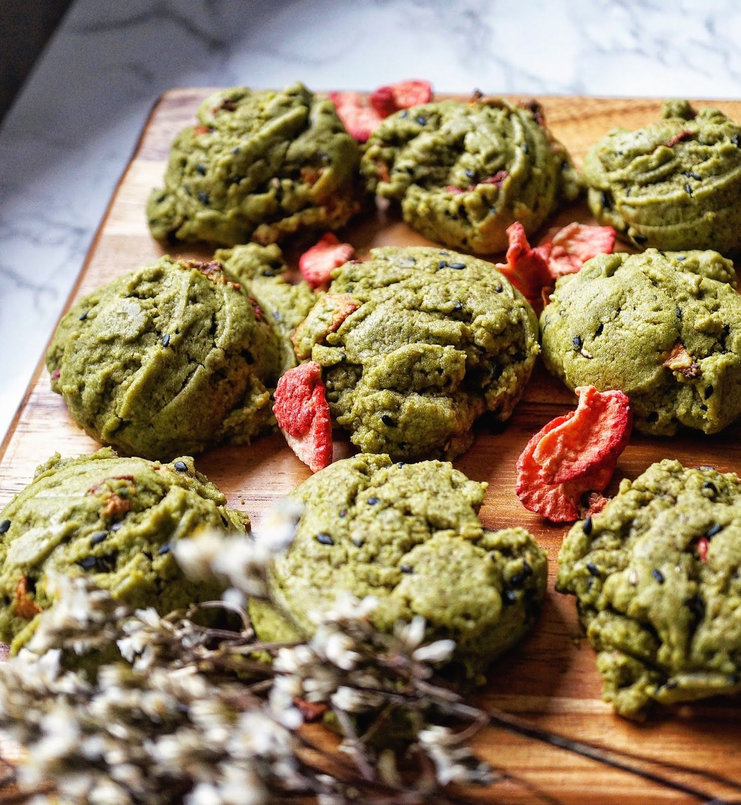

Strawberry Matcha Cookies

Ingredients
- 165g unsalted butter
- 90g dark brown sugar
- 145g granulated sugar
- 1 egg & 1 egg yolk
- 1/2 tbsp bourbon vanilla bean paste
- 200g all purpose flour
- 12g cornstarch
- 12g matcha
- Pinch of salt
- 1/2 cup white chocolate chips
- 1/2 cup crushed freeze dried strawberries
Instructions
- In a bowl, add in the softened butter.
- Use a hand mixer to mix until fluffy.
- Then add in your sugars and mix again until light and fluffy Add in the vanilla & egg and egg yolk.
- Beat until the mix is nice and smooth.
- In another bowl, whisk together flour, baking soda, cornstarch, pinch of salt and matcha powder.
- Add the dry ingredients to the wet and use a spatula to fold everything.
- Add the dry ingredients to the wet and use a spatula to fold everything Add in the cream cheese & white chocolate chips & freeze dried strawberries and mix again.
- Preheat oven to 350 degrees.
- Place about 2oz of cookie dough onto a parchment lined pan. Bake for about 11 minutes.
- Enjoy!